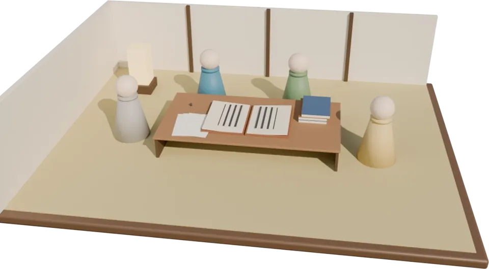
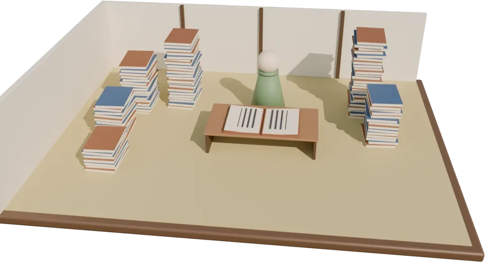
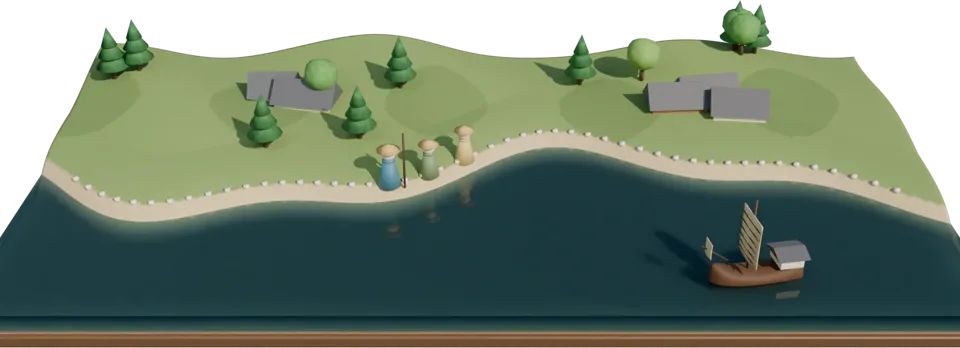

文字の大きさ
第4時新しい学問
つかむ調べるまとめる
教科書 p.162〜163
学習問題江戸時代には、どのような文化や学問が生まれたのだろう。
この時間のめあて江戸時代に、学問は、どのように発展したのだろう。
この時間のポイント
1「解体新書」の翻訳
杉田玄白は、オランダ語の医学書の人体の図が、実際の人体と同じであることにおどろきました。前野良沢らとともに、辞書もない中で3年半ほどかけて日本語に翻訳し、「解体新書」として出版しました。
教科書で確かめようp.162 資料イ・ウ
2みんなで翻訳

机を囲んで翻訳する（イメージの模型）
オランダ語の書物を通してヨーロッパの学問を研究すること（蘭学）が広まり、医学や天文学、地理学なども伝えられました。
教科書で確かめようp.162 本文
3日本の古典を学ぶ

日本の古典を読む（イメージの模型）
本居宣長は、「古事記」や「源氏物語」などの古典を研究し、35年かけて「古事記伝」を書きあげました（国学）。
教科書で確かめようp.163 本文
4歩いて日本地図をつくる

海岸を歩いて測る（イメージの模型）
伊能忠敬は、50才から西洋の天文学や測量術を学び、全国の沿岸を歩いて測りました。17年間に歩いたきょりは3万5000kmにもなります。
教科書で確かめようp.163 資料オ・カ
考えてみよう
- 江戸時代に、学問は、どのように発展したのだろう。
- 学問は、どのようにして広まっていったのだろう。
動画で見てみよう（NHK for School）
NHKのページが開きます。最初に確認の画面が出たら、おうちの人といっしょに進めてね。
- 縄文
- 弥生
- 古墳
- 飛鳥
- 奈良
- 平安
- 鎌倉
- 室町
- 安土桃山
- 江戸
- 明治
- 大正
- 昭和
- 平成
- 令和